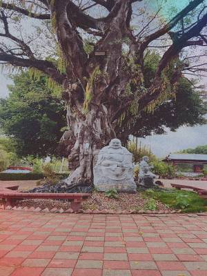
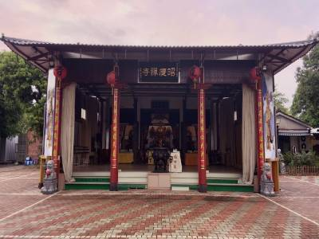
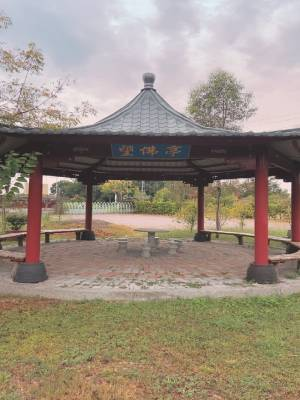
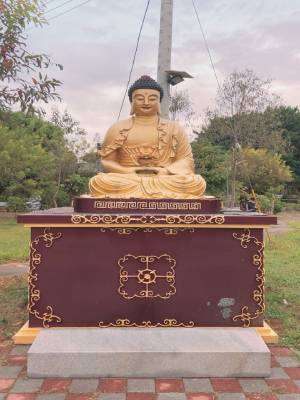
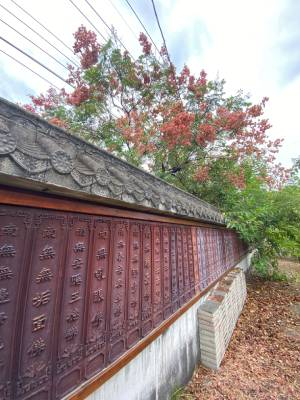

昭慶禪寺原名大埔林觀音亭紫蓮庵，佔地五千餘坪，建於清嘉慶六年（西元一八零一年），光緒年間毀於祝融後重建，日本昭和天皇尚未登基前，以太子身份來台，曾和紫蓮庵觀音佛祖結緣，擔任天皇後，欽命為「昭慶禪寺」，有些人則簡稱為「昭慶寺」。

昭慶禪寺的周遭非常幽靜，如果想要暫時離開城市的喧囂，可以來此處清修身心靈，是非常不錯的選擇，而且裡面的佛像和石頭雕像非常多元，像是十八羅漢和釋迦彌陀等...等著各位來探索。
如果是信徒的話，這裡有著多座佛尊非常適合進行參拜，會有種洗滌心靈的效果。



★★★★☆